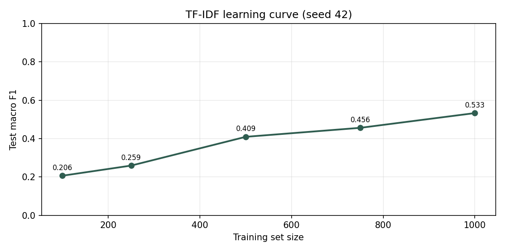

Can a Small Language Model Tell Proof from Paperwork?
Domain adaptation of Gemma 3 for cybersecurity control-evidence assessment — with sealed evaluation, classical baselines, and responsible-AI governance.
Abstract
Distinguishing operational proof from administrative paperwork is a core problem in cybersecurity assurance. ControlSift investigates whether parameter-efficient fine-tuning (QLoRA) of Gemma 3 1B Instruct improves five-class evidence-quality classification—SUFFICIENT, PARTIAL, INSUFFICIENT, IRRELEVANT, and CONTRADICTORY— on a leakage-controlled synthetic benchmark. The project freezes an evaluation protocol before large-model claims, reports classical baselines that establish task difficulty, and publishes only machine-readable metrics. On sealed TEST (n=200), majority-class macro F1 is 0.0667; TF-IDF + logistic regression leads at 0.5327 (challenge 0.5237). Gemma zero-shot reaches 0.0796, few-shot 0.1365 (best of the Gemma ladder), and QLoRA 0.0827 with parse success only 0.435—so QLoRA does not beat few-shot. Beyond the modeling ladder, ControlSift contributes a public research site, Failure Lab, and assurance documentation aligned with UN SDG 10 (reduced inequalities in access to trustworthy assurance triage). The work is a sealed synthetic protocol, not a production auditor.
1. Introduction
Security and governance, risk, and compliance (GRC) programs depend on evidence that controls operate as stated. In practice, binders fill with policies, screenshots, and exports that may be incomplete, off-objective, stale, or actively contradictory. Human reviewers can make these distinctions, but the volume of artifacts creates pressure to accept plausible paperwork as proof.
Small instruction-tuned language models are an attractive assistive technology: they are cheap to adapt, portable across free GPU environments, and capable of structured classification when the task is well specified. Adaptation gains are only meaningful, however, when they exceed strong classical baselines and survive a sealed evaluation design. ControlSift therefore asks:
Can parameter-efficient fine-tuning materially improve a small general-purpose language model’s ability to evaluate the sufficiency and relevance of cybersecurity control evidence?
This paper reports the full ladder: classical baselines, prompted Gemma, and QLoRA — with honest negative findings where adaptation did not win.
2. Background and motivation
Evidence quality is not the same as document relevance. A policy that requires multi-factor authentication is not proof that privileged accounts are enrolled. An export that shows an active privileged account without MFA can contradict the control. Reviewers therefore need labels finer than “related” versus “unrelated.”
- SUFFICIENT — complete, timely, on-objective operational proof for the stated control.
- PARTIAL — relevant operational content with material population or scope gaps.
- INSUFFICIENT — on-topic material that fails as execution proof (policy, attestation, procedure, or unverifiable capture).
- IRRELEVANT — off-objective substance filed under the control’s binder metadata.
- CONTRADICTORY — otherwise complete framing that contains a control-failure fact.
The modeling path: majority class → TF-IDF logistic regression → Gemma 3 1B zero-shot → few-shot → QLoRA. Each rung produces machine-readable metrics so improvements can be inspected rather than asserted.
3. Problem formulation
Each case provides a control statement, environment, evidence type, and evidence text. The model must emit exactly one of five labels. Evaluation uses macro F1 because classes are balanced by construction.
- H1 — QLoRA outperforms fixed zero-shot prompting on sealed test macro F1. Supported (0.0827 > 0.0796), but the absolute gap is tiny and parse fragility undercuts the claim.
- H2 — QLoRA outperforms fixed five-class few-shot prompting. Not supported (0.0827 < 0.1365).
- H3 — Gains remain visible on the challenge set. Mixed: few-shot challenge 0.1741 > QLoRA 0.1309 > zero-shot 0.1055; TF-IDF still leads at 0.5237.
- H4 — Performance increases with training-set size. Supported for TF-IDF learning curve.
- H5 — Difficult boundaries remain among PARTIAL, SUFFICIENT, INSUFFICIENT, IRRELEVANT. Supported (classical and Failure Lab).
4. Societal alignment
Official GCLP selection is SDG 10 (Reduced inequalities). High-quality GRC review is unequally available; an open, free-tier-reproducible triage study aims to narrow that expertise gap without replacing human judgment. Supporting context: SDG 16 (institutional mechanism), SDG 9 (PEFT access), SDG 4 (curriculum-visible artifact). Detail: UN SDG alignment.
5. Benchmark design
5.1 Corpus
1,500 synthetic cases across 13 control domains, balanced at 300 examples per class. Splits: train 1,000 / validation 200 / test 200 / challenge 100. Scenario families are assigned wholly to one split. Generation is deterministic under seed 42.
| Property | Value |
|---|---|
| Dataset version | 1.1.0 |
| Labels | Rule-derived via controlled mutations |
| Split isolation | Scenario-family level |
| Label audit | 100% challenge structural audit; 20-case stratified spot-check |
| Privacy | Synthetic organizations only; no customer evidence |
5.2 Representation
Version 1.1 packs each case as a compositional evidence packet: dual sections, substance pointer, shared decoy
lexicon, identical SCOPE scaffolding, and a ROW_DETAIL line. Class signal is
compositional rather than a single cue phrase — reducing trivial bag-of-words separability.
5.3 Integrity gates
CI enforces schema validity, class balance, and family non-leakage. A lexical-ceiling test requires TF-IDF
test macro F1 below a triviality threshold. Protocol seal hashes live in
governance/PROTOCOL_SEAL.json under protocol-v1-locked.
6. Methods
6.1 Classical baselines
Majority-class baseline predicts the training majority label. TF-IDF (unigrams and bigrams) with class-balanced logistic regression establishes a strong lexical floor. Inputs concatenate control statement, evidence type, and evidence text.
6.2 Language-model ladder
Primary model: google/gemma-3-1b-it. Zero-shot uses a frozen canonical JSON label prompt.
Few-shot adds one fixed train/validation exemplar per class. QLoRA uses 4-bit NF4, LoRA rank 16, α 16.
Malformed generations parse to UNPARSEABLE and count against performance.
6.3 Training and compute
Free GPU path (Kaggle / Colab). Secrets stay in platform stores — never in the repository.
7. Evaluation protocol
Evaluation was sealed before final LLM claims. Reported metrics include accuracy, macro precision/recall,
per-class F1, confusion matrices, challenge macro F1, and parse-success rate. Public results are copied only
from results/*/metrics_*.json into docs/data/results.json.
8. Results
8.1 Full TEST ladder
| Experiment | Test macro F1 | Accuracy | Challenge macro F1 | Parse success (test) |
|---|---|---|---|---|
| Majority | 0.0667 | 0.200 | 0.0667 | 1.000 |
| TF-IDF + LR | 0.5327 | 0.545 | 0.5237 | 1.000 |
| Gemma zero-shot | 0.0796 | 0.140 | 0.1055 | 0.760 |
| Gemma few-shot | 0.1365 | 0.200 | 0.1741 | 0.985 |
| Gemma QLoRA | 0.0827 | 0.075 | 0.1309 | 0.435 |
Source: docs/data/results.json / results/*/metrics_test.json. Seed 42 throughout.


8.2 Interpretation
TF-IDF leads. After the v1.1 harden (earlier drafts saturated at 1.0), lexical models still set the ceiling on this compositional packet task. Few-shot is the best Gemma rung among prompted and adapted 1B runs. QLoRA did not beat few-shot on TEST macro F1; with parse success ≈0.435, a large share of generations never land a valid label — the score is fragile and should not be read as a clean adaptation win. The sealed synthetic protocol therefore answers the research question negatively for “QLoRA beats strong prompting on this benchmark,” while still delivering a complete, inspectable methods ladder for residency review.
9. Error analysis
On sealed TEST, TF-IDF per-class F1 is strongest for CONTRADICTORY (~0.93) and weakest for SUFFICIENT (~0.25). Residual confusion concentrates on compositional coverage and substance-pointer distinctions. The public Failure Lab presents concrete cases. QLoRA’s low parse success is itself a first-class error mode: format adherence collapsed under adaptation relative to few-shot (0.985 parse success).

10. Responsible innovation
ControlSift is a research benchmark, not an automated auditor. Intended use: method comparison and study of assistive triage under synthetic conditions. Prohibited: production pass/fail scoring of customer evidence without human review; marketing synthetic scores as compliance certification. Governance artifacts include Data Card, Model Card, AI risk register, limitations, intended-use policy, and label-audit protocol.
11. Curriculum demonstration
The project implements the public Google DeepMind AI Research Foundations path end-to-end. The curriculum map lists every substantive public module subtopic with a ControlSift meet/partial rationale. GPU legs (prompting, QLoRA, acceleration) are complete; only the ≤5-minute presentation video remains for form submission.
12. Limitations
- Synthetic packets are not multi-document binders and do not include OCR noise or organizational politics.
- Labels are rule-derived with audit coverage; they are not a large-scale human gold standard.
- Compositional scaffolding may reward schema reading; that risk is disclosed.
- Class difficulty is uneven for classical models; macro F1 must be read with per-class tables.
- QLoRA parse success (~0.435) limits interpretation of that rung’s macro F1.
- Results for Gemma 3 1B do not automatically transfer to other model families or scales.
- Not a production auditor — sealed synthetic protocol only.
13. Reproducibility
pip install -e ".[dev]"
python scripts/validate_dataset.py
python scripts/run_tfidf_baseline.py
python scripts/run_evaluation.py
pytest
GPU artifacts under results/gemma_* feed docs/data/results.json for the public site.
14. Future work
Immediate remaining deliverable: record and upload the ≤5-minute video. Research follow-ons (optional): improve constrained decoding / parse reliability for adapted models; prose-harden packets if schema gaming dominates; extend Failure Lab with more Gemma disagreements. Do not invent better F1s.
15. Conclusion
ControlSift establishes a sealed, family-isolated evidence-quality benchmark and shows that careful construction can prevent lexical baselines from saturating the task. With TF-IDF near 0.53 and the best Gemma rung (few-shot) near 0.14, classical methods still lead on this synthetic packet surface. QLoRA did not beat few-shot, and parse fragility further cautions against overclaiming adaptation wins. The contribution is an inspectable research process that privileges integrity over premature model scores — framing small-model assistance as a tool for stronger institutional honesty, not a replacement for human judgment.
Accompanying artifacts
- Public research site — Home, Failure Lab, Results, Methods, Assurance
- UN SDG alignment · Curriculum map · Submission package
- Research protocol · Data Card · Model Card
- Public metrics JSON · Failure Lab
Acknowledgement: ControlSift was developed as an independent applied-AI research project following participation in Google DeepMind’s AI Research Foundations curriculum through Mentor Me Collective.